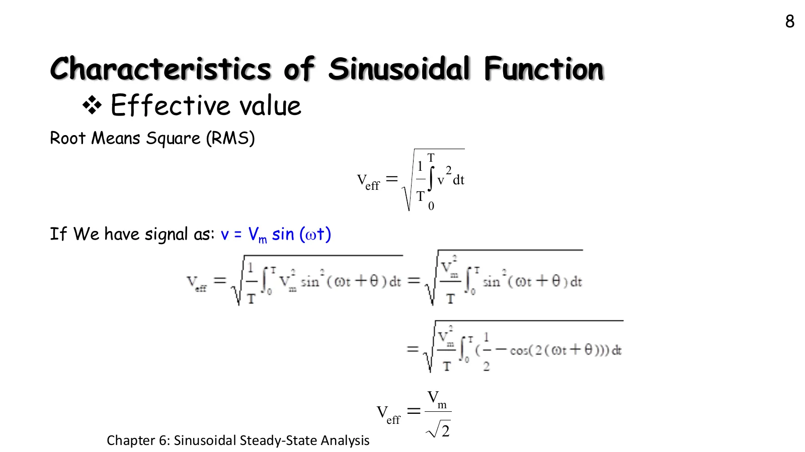
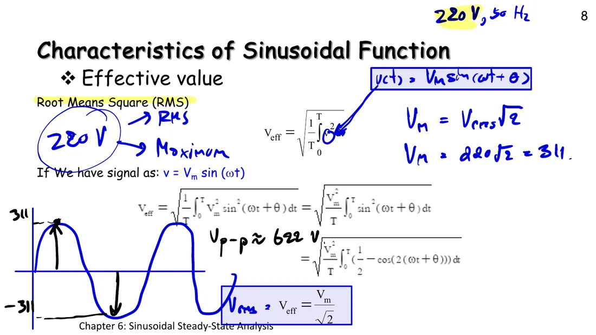
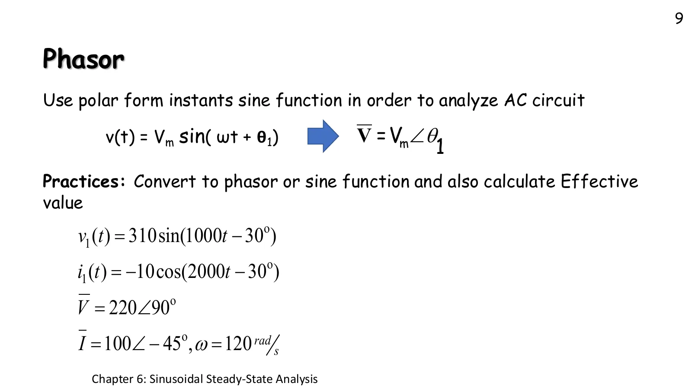
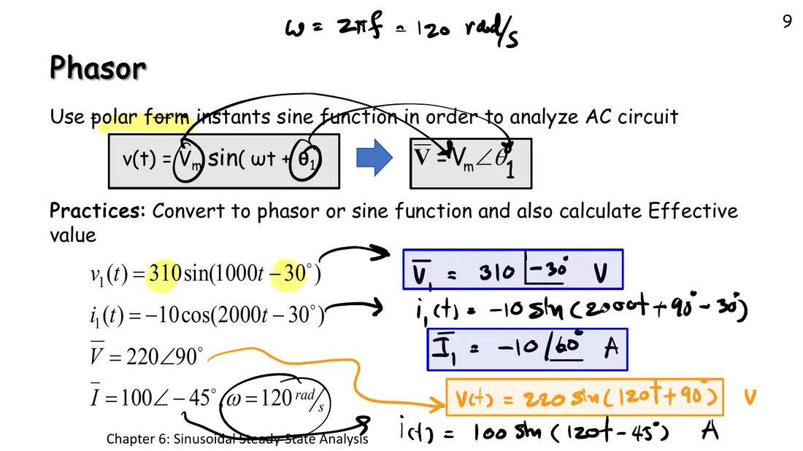
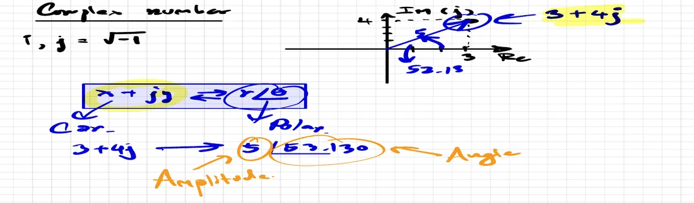

ค่ายังผลและเฟเซอร์ Effective (rms) value and phasors — what "220 V" means, and a sinusoid frozen into one complex number
Effective (rms) value and phasors What "220 V" means, and a sinusoid frozen into one complex number

สไลด์บทที่ 6 หน้า 8 · แตะรูปเพื่อขยายChapter 6 slides, p. 8 · tap to enlarge
ไฟบ้าน "220 V" ไม่ได้แปลว่าแรงดันเท่ากับ 220 V ตลอดเวลา แรงดันจริงแกว่งระหว่าง +311 V กับ −311 V ตัวเลข 220 V คือค่ายังผล (effective value) หรือค่ารากที่สองของค่าเฉลี่ยของกำลังสอง (root mean square, rms) แปลว่าแรงดันกระแสตรงที่ทำให้ตัวต้านทานร้อนเท่ากัน (สไลด์หน้า 8) ครึ่งหลังของหน้าเปลี่ยนคลื่นไซน์ทั้งลูกเป็นจำนวนเชิงซ้อนตัวเดียวที่เรียกว่าเฟเซอร์ (หน้า 9) หน้านี้มีภาพจำลองหลอดไฟ (ส่วน A) โจทย์ไฟบ้านหนึ่งข้อ แบบฝึกหัดเฟเซอร์สี่ข้อย่อย และการบวกคลื่นไซน์ด้วยเฟเซอร์ (ส่วน B)
Mains "220 V" does not mean the voltage is 220 V all the time: it swings between +311 V and −311 V. The 220 V is the effective value, also called the root-mean-square (rms) value, and it means the DC voltage that heats a resistor just as much (slide p. 8). The second half of the page turns a whole sine wave into a single complex number called a phasor (p. 9). This page has a lamp simulation (section A), one mains problem, one phasor practice with four items, and adding sinusoids with phasors (section B).
The effective value is the DC voltage that gives the same average heat; for a sinusoid \(V_{eff} = V_m/\sqrt2 \approx 0.707\,V_m\).
Mains 220 V is an effective value: the peak is \(V_m = 220\sqrt2 \approx 311\) V and the peak-to-peak value \(V_{p\text{-}p} = 2V_m \approx 622\) V. Ordinary meters read effective values.
The phasor of the slides: \(v(t) = V_m\sin(\omega t + \theta) \Rightarrow \mathbf{V} = V_m\angle\theta\), the position of the spinning arrow at \(t = 0\). \(\omega\) is not part of the phasor; you must remember it yourself.
Before writing a phasor, turn the function into a sine with a positive amplitude, e.g. \(-10\cos(2000t - 30^\circ) = 10\sin(2000t - 120^\circ) \Rightarrow 10\angle{-120^\circ}\).
Same-frequency sinusoids add as phasors: \(0.5\angle{-62^\circ} + 2\angle 28^\circ = 2.062\angle 13.96^\circ\), not 2.5, because the two do not peak together.
A
ค่ายังผล: แรงดันกระแสตรงที่ร้อนเท่ากัน
The effective value: the DC voltage that heats the same
หลอดไฟ 100 W ที่ 220 V (484 Ω) สองดวง · ที่มาของสูตรอยู่ใต้แผงควบคุม
Two 100 W, 220 V lamps (484 Ω) · the derivation is under the panel
The left lamp is fed by an AC source, the right one by an adjustable DC source. It runs so slowly that the left lamp flickers with its instantaneous power \(p = v^2/R\), brightest twice per cycle (at the positive and the negative peak, since \(v^2\) is always positive). The lower graph is \(p(t)\) and the dashed line is the average power. Slide \(V_{DC}\) until the green line lies exactly on the dashed one: then \(V_{DC} = V_m/\sqrt2\).
ที่มาของ \(V_{eff} = V_m/\sqrt2\) (สไลด์หน้า 8)Where \(V_{eff} = V_m/\sqrt2\) comes from (slide p. 8)
ความร้อนในตัวต้านทานขึ้นกับ \(v^2\) ค่ายังผลจึงนิยามจากค่าเฉลี่ยของ \(v^2\) ในหนึ่งคาบ แล้วถอดรากที่สอง ใช้ \(\sin^2 x = \tfrac12(1 - \cos 2x)\) ส่วนที่เป็น cos มีค่าเฉลี่ยเป็นศูนย์
The heat in a resistor depends on \(v^2\), so the effective value is defined from the average of \(v^2\) over one period, then the square root is taken. Use \(\sin^2 x = \tfrac12(1 - \cos 2x)\); the cosine part averages to zero.
1
ไฟบ้าน 220 V 50 Hz: ค่ายอด ค่ายอดถึงยอด และฟังก์ชันเวลาเป็นเท่าไร
Mains 220 V 50 Hz: what are the peak, the peak-to-peak value and the time function?
ตัวอย่างที่ผู้สอนเขียนบนสไลด์หน้า 8 ในห้อง
The example the teacher wrote on slide p. 8 in class
ดูสไลด์หน้า 8 ที่ผู้สอนเขียนในห้องSee slide p. 8 as written in class

220 V คือค่ายังผล ค่ายอด \(V_m = 220\sqrt2 = 311\) V และ \(V_{p\text{-}p} \approx 622\) V220 V is the effective value; the peak is \(V_m = 220\sqrt2 = 311\) V and \(V_{p\text{-}p} \approx 622\) V
Slide p. 9 defines the phasor \(v(t) = V_m\sin(\omega t + \theta_1) \Rightarrow \mathbf{V} = V_m\angle\theta_1\): the spinning arrow of page 6.1 frozen at \(t = 0\). Everything in a circuit turns at the same \(\omega\), so only the length and the starting angle are written down. Items 2a–2b convert to phasors, items 2c–2d back to time functions, and every item finds the effective value.

สไลด์หน้า 9 · แตะรูปเพื่อขยายSlide p. 9 · tap to enlargeดูคำตอบที่ผู้สอนเขียนในห้องSee the teacher's in-class answers

ในห้องเขียน \(\mathbf{I}_1 = -10\angle 60^\circ\) ซึ่งเป็นเฟเซอร์เดียวกับ \(10\angle{-120^\circ}\) แต่ขนาดของเฟเซอร์ควรเป็นบวก (กฎข้อ 2)In class \(\mathbf{I}_1 = -10\angle 60^\circ\) was written; it is the same phasor as \(10\angle{-120^\circ}\), but a phasor's size should be positive (rule 2)
2a
\(v_1(t) = 310\sin(1000t - 30^\circ)\) V → เฟเซอร์และค่ายังผล
\(v_1(t) = 310\sin(1000t - 30^\circ)\) V → phasor and effective value
2b
\(i_1(t) = -10\cos(2000t - 30^\circ)\) A → เฟเซอร์และค่ายังผล
\(i_1(t) = -10\cos(2000t - 30^\circ)\) A → phasor and effective value
The start values are \(\mathbf{I}_{R2}\) and \(\mathbf{I}_C\) of the homework on page 6.4
แหล่งจ่ายกระแสสองตัวความถี่เดียวกันป้อนเข้าจุดต่อเดียวกัน กฎกระแสของเคียร์ชอฟฟ์ (Kirchhoff's current law, KCL) เป็นจริงทุกขณะ กระแสในตัวต้านทานจึงเป็น \(i = i_1 + i_2\) ทุกจุดบนกราฟ บวกด้วยเฟเซอร์ได้ 2.062 A ไม่ใช่ 0.5 + 2 = 2.5 A เพราะลูกศรสองตัวทำมุม 90° กัน ลูกศรต่อหัวต่อหางในระนาบเฟเซอร์คือการบวกเวกเตอร์
Two current sources of the same frequency feed one junction. Kirchhoff's current law (KCL) holds at every instant, so the resistor carries \(i = i_1 + i_2\) at every point of the graph. Added as phasors they give 2.062 A, not 0.5 + 2 = 2.5 A, because the two arrows are 90° apart. The head-to-tail arrows on the phasor plane are a vector sum.
Polar forms cannot be added directly (unless the angles are equal): convert to \(a + jb\) first with \(r\angle\theta = r\cos\theta + j\,r\sin\theta\), add real to real and imaginary to imaginary, then convert back.
ดูหน้าที่ผู้สอนเขียนเรื่องจำนวนเชิงซ้อนในห้องSee the teacher's in-class page on complex numbers

รูปคาร์ทีเซียน \(x + jy\) กับรูปเชิงขั้ว \(r\angle\theta\): \(3 + j4 = 5\angle 53.13^\circ\)The Cartesian form \(x + jy\) and the polar form \(r\angle\theta\): \(3 + j4 = 5\angle 53.13^\circ\)
ลองทำดู 1 — หาค่ายังผลด้วยตาเอง
ส่วน A เลื่อน \(V_{DC}\) จนกำลังเฉลี่ยเท่ากัน จะได้ประมาณ 220 V เมื่อ \(V_m\) = 311 V (กดปุ่ม "\(V_{DC} = V_m/\sqrt2\)" เพื่อตรวจ)